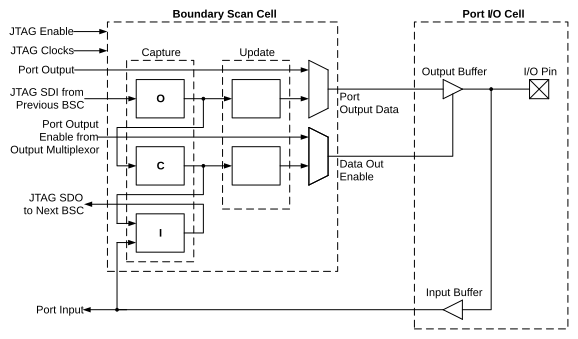

The function of the BSC is to capture and override I/O input or output data values when JTAG is active. The BSC consists of three Single-Bit Capture register cells and two Single-Bit Holding register cells. The capture cells are daisy-chained to capture the port’s input, output and control (output-enable) data, as well as pass JTAG data along the Boundary Scan register. Command signals from the TAP controller determine if the port of JTAG data are captured and how and when it is clocked out of the BSC. The first register either captures internal data destined to the output driver or provides serially scanned in data for the output driver. The second register captures internal output-enable control from the output driver and also provides serially scanned in output-enable values. The third register captures the input data from the I/O’s input buffer.
Figure 39-5 shows a typical BSC and its relationship to the I/O port’s structure.
